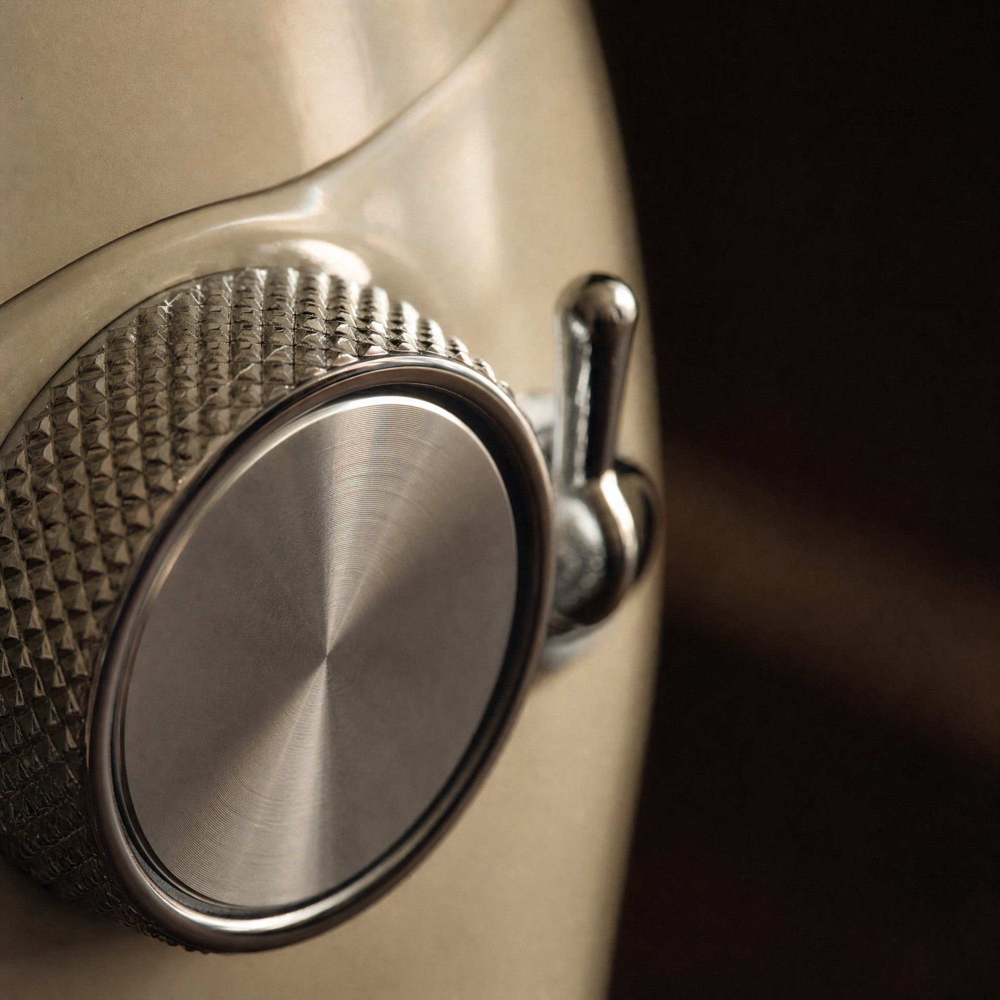
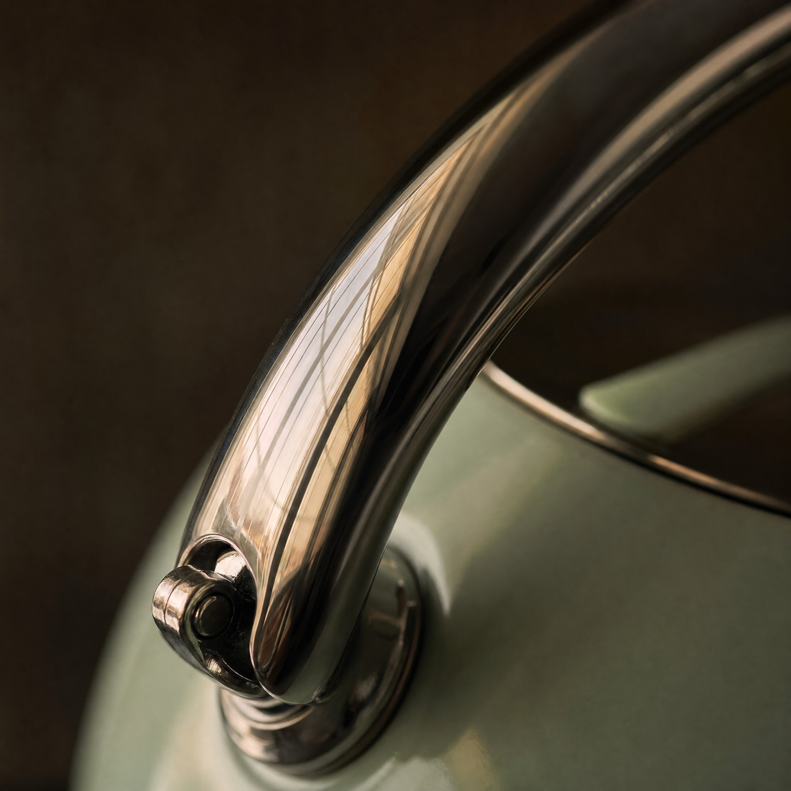
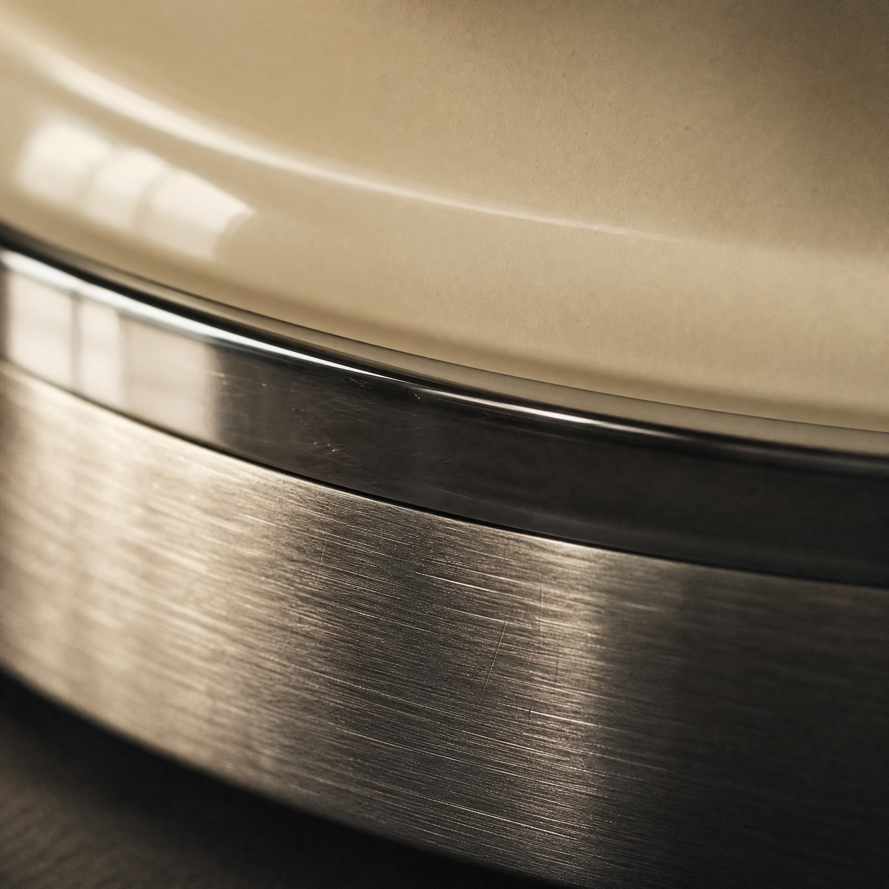

朝のための家電ではなく、 一日を終えた台所のための家電。
SMEGとは
SMEG（スメッグ）は、イタリア・エミリア＝ロマーニャ州グアスタッラで創業したキッチン家電ブランドです。テクノロジーとスタイルの融合を掲げ、レンゾ・ピアノやマーク・ニューソンをはじめとする建築家・デザイナーとの協業から、時代を超えて愛される製品を生み出してきました。Made in Italyを代表するブランドのひとつです。
1948
イタリアで創業
120+
世界120か国以上で展開
Made in Italy
イタリア国内の自社工場で製造
Design
iF・Red Dotなど国際的デザイン賞を受賞
50's レトロスタイル
丸みを帯びたフォルムと豊富なカラーバリエーションが特徴の、SMEGの代表シリーズ。1950年代のエレガンスを現代に蘇らせ、家電をインテリアの主役へ昇華させました。象徴は冷蔵庫FAB28。



コラボレーション
SMEG × PORSCHE
モータースポーツの最高峰ポルシェとSMEGの共創。レーシングスピリットとイタリアンデザインが融合したコレクションは、パフォーマンスと美の両立を追求するふたつのブランドの哲学を体現しています。
SMEG × DOLCE&GABBANA
「Sicily is my Love」コレクション。シチリアの伝統とイタリアンモードが融合した、アート作品のような家電です。
イタリアの温度と、ドイツの精度。私たちが選ぶ基準が、この2社の交点にあります。
製品ラインアップ
小型キッチン家電
| カテゴリー | モデル | 説明 |
|---|---|---|
| ケトル | KLF03 | 丸みのあるフォルムが象徴的な電気ケトル。台所に置いたままにしておける定番。 |
| トースター | TSF01 | ポップアップ式。焼き色調整ダイヤル、解凍・ベーグル・温め直しモードを搭載。 |
| ブレンダー | BLF01 | スムージーやジュースづくりに。存在感のあるデザインと確かなパワー。 |
| ハンドブレンダー | HBF02 | つぶす、混ぜる、刻む、泡立てる。付属アタッチメントで幅広い調理に対応。 |
| ソーダメーカー | SKC01 | 2026年発売の新カテゴリー。自宅で炭酸水をつくれる。 |
大型・ビルトイン家電
| カテゴリー | シリーズ | 説明 |
|---|---|---|
| 冷蔵庫 | FAB28 | 50'sレトロスタイルのアイコン。冷却機能とLED照明を内蔵。 |
| ミニ冷蔵庫 | FAB5 | 寝室、リビング、オフィスなど省スペースに。ミニバーとしても。 |
| ビルトインオーブン | Linea他 | グリル、ターボ、ピザなど最大10種類の調理モード。電子レンジ複合モデルも展開。 |
| ウォーマー | ― | タッチコントロール搭載。食器の温めや再加熱、低温調理に対応。 |
カラー
VIVID（ブラック／ホワイト／レッド）、PASTEL（クリーム／ピンク／パステルグリーン／パステルブルー）、METAL（シルバー／ゴールド／ローズゴールド）、MATT（マットブラック／マットホワイト／シャンパンマット）。
SMEGのある暮らしを、愛用者のことばで。
SMEG STORIESは、TRY'Sが企画・運営するライフスタイルメディアです。実際にSMEGと暮らす人たちの話を起点に、選ぶための手がかりを届けています。